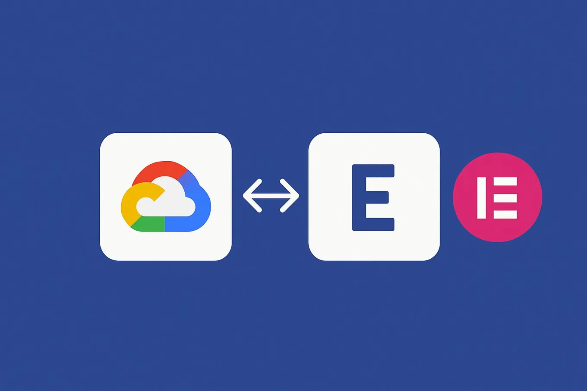

How Elementor Hosting scales on Google Cloud
Originally posted on LinkedIn, June 11, 2025.
Elementor and Google Cloud built cloud infrastructure that handles high-volume traffic and delivers at record speed. Our Hosting team set out to build a service that does not require developers to “prepare for Black Friday.” They can trust that the site will stay fast, available, and ready to convert.
Elementor Hosting can take a professional WordPress site from zero to running in the cloud within a few minutes. Search Google for Elementor Hosting.
Working with Google Cloud, the team built a service with:
- Built-in automatic scaling in every plan
- A 72% improvement in Time To First Byte, from 2.5 seconds to under 700 milliseconds
- An architecture based on Kubernetes + IaC that supports automatic provisioning
- A commitment to speed, stability, and performance without requiring customer involvement
“When we say Worry-Free Hosting, we really mean it,” said Ido Navarro, Product Manager at Elementor.
Google Cloud was not just a service provider. Its people worked as part of the team, from architecture guidance to direct technical support in real time.
Elementor already serves more than 18 million websites, or 12% of the internet. With this infrastructure, the company is ready for much more. Google Cloud published the full article about how the team built it.
